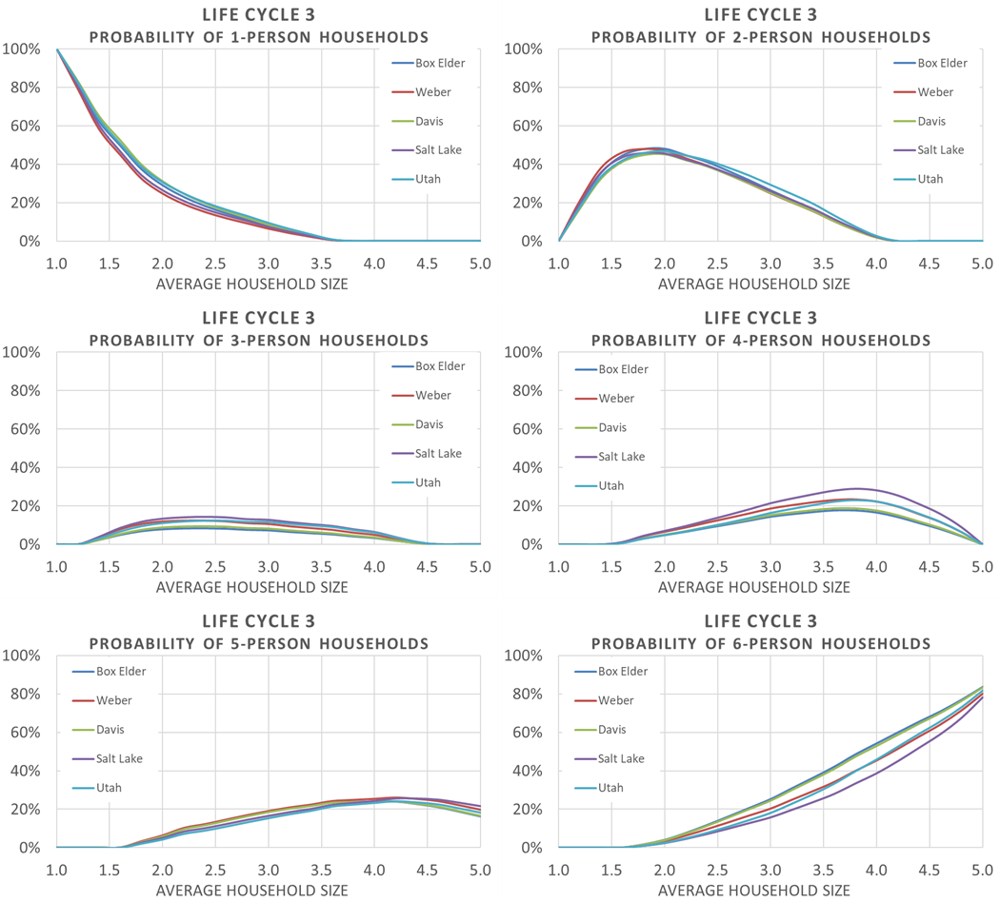
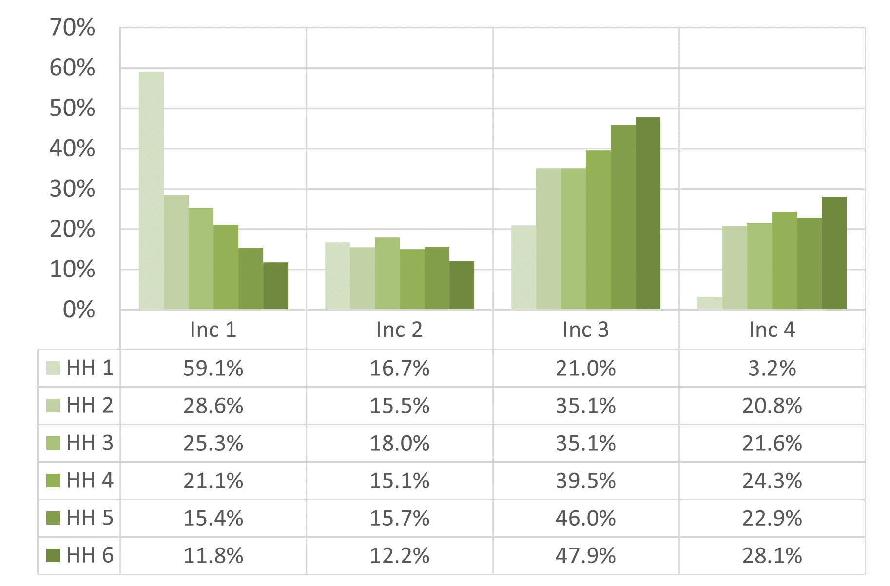
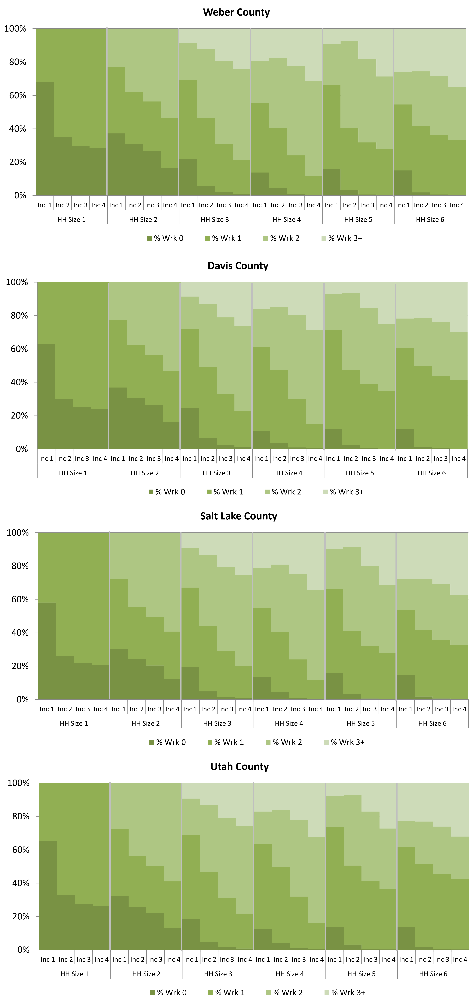

| County | 0-17 Population Age Group (LC2 Fac 0-17) | 18-64 Population Age Group (LC2 Fac 18-64) |
|---|---|---|
| Box Elder | 0.993 | 0.664 |
| Weber | 0.982 | 0.606 |
| Davis | 0.974 | 0.711 |
| Salt Lake | 0.961 | 0.525 |
| Utah | 0.981 | 0.659 |
Household Disaggregation and Auto Ownership
Life Cycle
The Life Cycle model determines the how much of the TAZ population and households from the processed socioeconomic input file will be in one of three life cycle categories:
- Life Cycle 1 – households with no children and no seniors
- Life Cycle 2 – households with children and no seniors
- Life Cycle 3 – households with seniors (may have children)
The Life Cycle model does its calculations in three phases:
- Determine the TAZ population that is in three age groups
- Determine each age group population that is in the three life cycle categories
- Determine the number of households in each life cycle category
Population by Age Group
The Life Cycle model first estimates how much of the TAZ population falls into one of three Age Group categories:
- Age Group 1 – 0 to 17 years old
- Age Group 2 – 18 to 64 years old
- Age Group 3 – 65+ years old
The initial share of the TAZ population in each Age Group is determined by multiplying the TAZ household population by the TAZ-level Age Group percentages in the Lookup - BYTAZAgePct - AllCo.csv file located in the
1_Inputs\\0_GlobalData\\1_HHDisag_AutoOwn directory. These initial TAZ-level Age Group percentages were calculated from 2020 Census block and 2020 ACS block group data summarized at the TAZ level.
The Census data was also summarized at the medium district level. If the Census TAZ data had fewer than 50 people, the percentages from medium districts were used. The medium district distribution of 2020 Census Age Group percentages for the Wasatch Front can be seen in Figure 1. The share of population in each of the Age Groups varies significantly by geography. Urban areas tend to have the highest share of population 18-64 years old and the fewest children and seniors. Suburban and rural areas tend to have the highest share of children.
The initial TAZ-based population by Age Group is then factored to reflect the year being modeled. This is done using the county population by Age Group forecasts found in ControlTotal_Age.csv located in 1_Inputs\\2_SEData\\_ControlTotals directory. The Age Group county-level percentages are calculated from county-level population projections from the Kem C. Gardner Policy Institute (GPI), 2020-2060 State and County Total Population by Sex and Single-Year of Age. The GPI projections show a trend in all counties in the Wasatch Front model space toward a more senior population and fewer children. Adult population in the age range of 18-64 also saw a slight increase in population share.
Population by Life Cycle
The Life Cycle model uses parameters estimated from the 2012 Household Survey to convert population in Age Groups to population in a Life Cycle category. Unique parameters were estimated for each county and are found in Table 1.
Only factors for Life Cycle 2 were estimated. Life Cycle 1 has no children leaving the 0-17 population to be divided between Life Cycles 2 and 3. Life Cycle 3 has no adults age 18-64 leaving the 18-64 population to be divided between Life Cycles 1 and 2. All of 65+ population lies completely within Life Cycle 3. Table 2 contains the equations used to calculate Life Cycle population.
| Age Group | Life Cycle 1 | Life Cycle 2 | Life Cycle 3 |
|---|---|---|---|
| 0-17 | 0 | LC2 Fac 0-17 | 1 – (LC2 Fac 0-17) |
| 18-64 | 1 – (LC2 Fac 18-64) | LC2 Fac 18-64 | 0 |
| 65+ | 0 | 0 | 1 |
Almost all of the child-aged population is contained within Life Cycle 2, ranging between 96.1% in Salt Lake County and 99.3% in Box Elder County. The remaining child population is in Life Cycle 3. The majority of the adult-not-a-senior population is contained in Life Cycle category 2, ranging between 52.5% in Salt Lake County and 71.1% in Davis County, with the remainder falling into Life Cycle 1.
Households by Life Cycle
The Life Cycle model calculates households by Life Cycle using the average household size for each Life Cycle category. Unique average household sizes were estimated for each county and Life Cycle from the 2012 Household Survey.
| County | Household Size for Life Cycle 1 | Household Size for Life Cycle 2 | Household Size for Life Cycle 3 |
|---|---|---|---|
| Box Elder | 1.86 | 4.21 | 2.41 |
| Weber | 1.88 | 4.53 | 1.81 |
| Davis | 2.14 | 4.68 | 2.33 |
| Salt Lake | 1.86 | 4.44 | 1.81 |
| Utah | 2.11 | 4.75 | 2.21 |
The TAZ-level population by Life Cycle category are divided by the average household size factors to generate an estimate of the share of TAZ-level households in each Life Cycle category. The share of households in each Life Cycle category is then multiplied by the total households in the TAZ to get the adjusted number of households per Life Cycle category.
A final check is made to avoid unrealistic household sizes for zones with smaller populations. The number of households for a given Life Cycle category are capped at the minimum and maximum household sizes found in Table 4.
| Life Cycle Category | Minimum Household Size | Maximum Household Size |
|---|---|---|
| 1 | 1 | 4 |
| 2 | 2 | 8 |
| 3 | 1 | 4 |
Household Disaggregation
The Household Disaggregation model classifies a TAZ’s households by:
- Household Size
- Income
- Number of Workers
Household Disaggregation is done in three steps with each step adding another level of disaggregation: estimating the distribution of households by size group, further disaggregation by income group and income level, and further disaggregation by number of workers per household. This results in 96 groupings when using the four income groups or 48 groupings when using low/high income levels.
For disaggregation to household size groups, the following lookup files contain the distribution of households across the six household size groups according the average household size for the three life cycle categories: Lookup - HH Size_LC1.csv, Lookup - HH Size_LC2.csv, and Lookup - HH Size_LC3.csv. The distributions in these files are grouped by county. There is also a third lookup file that contains a regional distribution used for comparison purposes: Lookup - HH Size.csv. When computing income ratios, the regional median household income of $74,946 (2019 dollars) is used from the latest ACS.
Further disaggregation by income groups is done in multiple steps. First a target TAZ distribution by income is calculated using a county distribution found in Lookup - Income.csv. Then a Fratar/Furness balancing method is used to get the matrix distribution across income groups and household sizes. The matrix is initialized with the values found in Table 5, which is hard-coded into the 2_HHDisaggregation.s script with the source being the 2012 Household Survey. The balancing method is run through until convergence is reached at (0.0001) or a max of 15 iterations.
| Household Size | Income Group 1 Seed | Income Group 2 Seed | Income Group 3 Seed | Income Gruop 4 Seed |
|---|---|---|---|---|
| 1 | 0.591 | 0.167 | 0.21 | 0.032 |
| 2 | 0.286 | 0.155 | 0.351 | 0.208 |
| 3 | 0.253 | 0.18 | 0.351 | 0.216 |
| 4 | 0.211 | 0.151 | 0.395 | 0.243 |
| 5 | 0.154 | 0.157 | 0.46 | 0.229 |
| 6 | 0.118 | 0.122 | 0.479 | 0.281 |
Final disaggregation by worker is a simple distribution which is found in the Lookup – Worker.csv file. This file contains a distribution across the worker groups by each of the 24 combinations of the six household size groups and the four income groups. Households are then aggregated back to the two income levels (low/high).
Household Size
The Household Disaggregation model estimates how many households are in six Household Size categories:
- 1 person households
- 2 person households
- 3 person households
- 4 person households
- 5 person households
- 6 or more person households
The model uses the TAZ’s average household size to look up the share of households in each of the six Household Size categories. This is done independently for each of the three Life Cycle categories estimated in the previous model step.
???Is there newer data than the 2018 spreadsheet???
2010 Census Block Group data was used to determine the initial relationship between average household size and the number of households in each size category. To increase sample size, all Block Groups in Utah were included. Draft curves were estimated from the data’s polynomial trendline as shown in Figure 3.

The results from the equations derived from the Census data were adjusted to remove negative values and to smooth and scale the resulting curves. The sum of the individual curves at any given average household size is 1. Figure 4 shows the smoothed curves for household size share by average household size.
The 2012 Household Survey was used to estimate the share of households in each Household Size category by Life Cycle. The entire statewide database was used and aggregated to medium districts in order to obtain sufficient number of survey records in a group yet preserve a sufficient number of observations to estimate lookup curves by Life Cycle. The estimated Life Cycle curves were then used to weight the Household Size lookup curves derived from the Census data (termed “All Data” in Figure 5) to obtain Household Size lookup curves by Life Cycle.

The Household Size lookup curves were then calibrated to county-level household size data from the 2010 Census as shown in Figure 6, Figure 7, and Figure 8. The county-level adjustments were done to tailor to the lookup curves to account for local variations.



Income
The Household Disaggregation model estimates what percentage of household size exist at each of the following income groups (income levels) in 2016 dollars:
- 1: $0 to 35,000 (Low)
- 2: $35,000 to 60,000 (High)
- 3: $60,000 to 100,000 (High)
- 4: $100,000 and above (High)
2010 Census Block Group data was used to determine the initial relationship between income group and income ratio (ratio of the block group median income to the regional median income). To increase sample size, all Block Groups in Utah were included. Draft curves were estimated from the data’s polynomial trendline as shown in Figure 9.

The results from the equations derived from the Census data were adjusted to remove negative values and to smooth and scale the resulting curves. The sum of the individual curves at any given income group is 1. Figure 10 shows the smoothed curves for income group share by income ratio.

In addition to calculating the income group share by income ratio, the percentage of household size by income group was also summarized using the 2010 Census Block Group Data. Figure 11 shows the breakdown of the household size income seed table values.

Worker
The Household Disaggregation model estimates what percentage of worker groups exist within each household size at each income group level. The worker groups are as follows:
- Worker Groups: 0, 1, 2, 3+ workers per household
2010 Cesus Block Group data as well as the 2012 Household Travel Survey were used to estimate work groups into the percentages shown in Figure 12.
???Was both HTS and BG data used???

After the initial summarization of the data, the worker group percentages were calibrated to the Wasatch Front area (See Figure 13). A worker group percentage lookup table was created to be used in the model.

Auto Ownership
The Auto Ownership model begins with the disaggregated households by TAZ and calculates how many vehicles each group owns. Households by vehicle ownership is grouped by 0, 1, 2, and 3+ vehicles. Auto ownership is based on utility functions for each combination of household size group, worker group, and income level (low/high). The utilities for each TAZ are then converted into probabilities. When the probabilities are multiplied by the associated number of households, then an auto ownership distribution by TAZ is created.
The utility functions for auto ownership contain a series of binary and linear variables. The binary variables are loop toggles that are set to 1 or 0 for household size groups, worker groups, and income levels. There are also two linear variables that are taken from TAZ attributes: population density of five nearest zones and employment within 30 minutes by transit. The coefficients for the utility function are shown in Table 6.
The code loops through the three groups to create utilities for each combination of binary variables for each TAZ. As can be seen in the table, for household size groups 5 and 6+, 3+ workers in a household, and high income, there are zero utility coefficients, which mean for combinations with these variables there is no utility. Additionally, the 3-vehicle utility is always set to 0 for every combination.
| Variable | 0-Vehicle Utility Function Coefficients | 1-Vehicle Utility Function Coefficients | 2-Vehicle | 3-Vehicle |
|---|---|---|---|---|
| Constant | -5.103 | -1.97 | 0.15 | 0 |
| Household Size of 1 | 3.288 | 2.953 | 0.581 | 0 |
| Household Size of 2 | 0.277 | 0.503 | 0.42 | 0 |
| Household Size of 3 | -0.277 | 0.334 | -0.445 | 0 |
| Household Size of 4 | 0.039 | -0.952 | -0.809 | 0 |
| Household Size of 5 | 0 | 0 | 0 | 0 |
| Household Size of 6+ | 0 | 0 | 0 | 0 |
| 0 Worker in Household | 0.998 | 0.514 | 0 | 0 |
| 1 Workers in Household | 0 | 0.552 | 0.081 | 0 |
| 2 Workers in Household | 0 | 0 | 0.07 | 0 |
| 3+ Workers in Household | 0 | 0 | 0 | 0 |
| Low Income (Group 1) | 2.733 | 1.557 | 0.538 | 0 |
| High Income (Group 2-4) | 0 | 0 | 0 | 0 |
| Population Density of 5 nearest Zones | 0.05159 | 0.07346 | 0.02366 | 0 |
| Employment within 30 minutes by transit | 1.99e-05 | 8.342e-06 | 0 | 0 |
Using the utility values, probabilities for the vehicle ownership groups are calculated for each TAZ for each combination. The probability is the ratio of the exponential utility of each vehicle ownership group divided by the sum of the exponential utility of all three vehicle ownership groups for each combination. The vehicle ownership probabilities are multiplied by their associated household numbers as calculated in the household disaggregation script to get the number of households in each vehicle ownership group. Additionally, several aggregations are made to calculate total number of vehicles in different groupings. When calculating the number of vehicles in a 3+-vehicle group, the value of 3.5 number of vehicles per 3+ households is used.